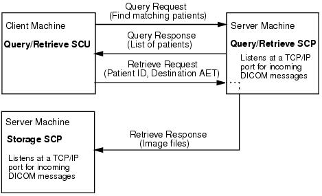

Open topic with navigation
Defining a Machine to Be Queried
Query/Retrieve is the process by which DICOM devices request information from a database and retrieve data and images through those requests. To form an association, the local Query Retrieve SCU connects with a remote Query Retrieve SCP. The client at the Query Retrieve SCU machine sends a request to the remote Query Retrieve SCP machine. The Query Retrieve SCP machine responds with a list of patients. From this list the client requests files (identified by patient ID) be sent to a destination (identified by Application Entity title). The remote Query Retrieve SCP machine responds to the request and sends files to the file storage directory that you defined in association with the Storage SCP Application Entity. The Storage SCP service writes the incoming files to disk.

Flow of Data in a Query Retrieve Operation
Note:
The default
Query Retrieve SCU Application Entity is IDL_AE_QUERY_SCU. There is no need to make any changes to this entity definition, but you can define a new Application Entity if desired. You would then select the new entity in the
Query Retrieve SCU Application Entity
area of the
Configuration
tab in the
DICOM Network Services
utility and click
Save
.
-
Tell the Query Retrieve SCP device (the
file source
) where files should be sent (the Storage SCP Application Entity information that indicates the
file storage
location)
-
Configure a Query SCP Application Entity (for the file source) on your machine (the machine running the query)
Complete the following steps:
-
On the file source (likely a remote machine or device) that is running the Query Retrieve SCP service, enter the Storage SCP Application Entity information. This Application Entity is the one defined in
Configuring Your System to Receive Files
. You can look up the following information in the
DICOM Network Services
utility by launching it with the SYSTEM keyword. (See
Starting the DICOM Network Services Utility in System Mode
if needed).
-
Application Entity Title
— the default is IDL_STORE_SCP.
-
Host Name
— if the current value is
localhost
, you will instead need to provide the machine host name or IP address. See
Determining the IP Address
if you do not know the host name.
-
Port Number
— the default value is 2510.
-
Record the Application Entity title, host name or IP address, and port number of the Query Retrieve SCP service on the file source machine.
-
On your local machine, the machine from which the queries will be made, open the
DICOM Network Services
utility by entering:
DICOMEX_NET
-
Define an Application Entity that describes the network characteristics of the device from which files are requested, the file source. Use the information collected in step 2 to configure a local Query SCP Application Entity. For instructions on defining a new Application Entity, see
Defining a New Application Entity
.
This entity should be assigned the following:
-
Service List Name
— Query_SCP_Service_List
-
Service Type
— Query_SCP
Selecting the Query_SCP service type for this Application Entity indicates the remote device listens for and responds to queries. This service also listens for requests and sends the specified DICOM files. The following figure shows a hypothetical Application Entity configured as a Query SCP service for the file source device.
-
Also on your local machine, make sure the Storage SCP Application Entity referenced in step 1 is listed in the
Existing Entities
droplist on the
Configuration
tab. (This is the entity defined in
Configuring Your System to Receive Files
.) If you modified the default characteristics of the IDL_AE_STOR_SCP Application Entity or created a new Application Entity that uses the Storage SCP service while in system configuration mode, you must duplicate those settings in the
DICOM Network Services
utility while in local configuration mode.
See
Querying a Remote Machine
for information on how to use the
DICOM Network Services
utility to query and retrieve files.